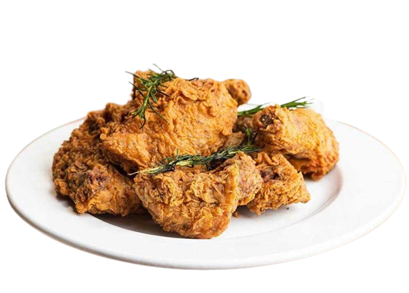

Honey Buttermilk Fried Chicken
Honey Buttermilk Fried Chicken is
a sweet-sour honey marinade flavors this juicy fried chicken.
Honey and vinegar get together in the marinade for the chicken, and then it's coated in a buttermilk batter
and deep-fried to golden brown perfection.
A drizzling of the hot boiled marinade finishes the fried chicken perfectly. This is a tasty change of pace from the
everyday fried chicken, and it is delicious with rice, potatoes, or noodles.
Fried chicken has been described as being "crunchy" and "juicy", as well as "crispy". The dish has also been called
"spicy" and "salty". With the use of buttermilk, Because of its slight acidity, buttermilk has the ability to
tenderize the chicken, without it becoming tough and chewy. Using buttermilk also helps the chicken go nice
and flaky when you dredge it through the dry mix.